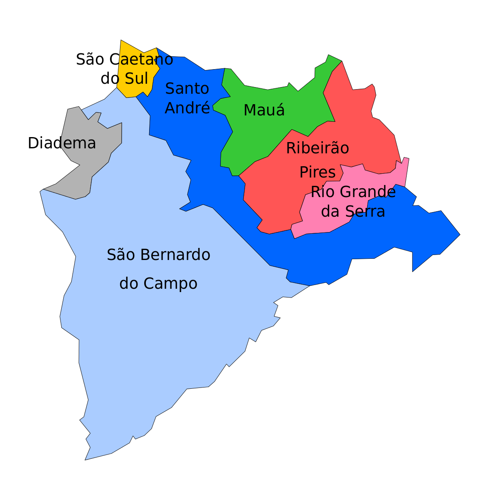
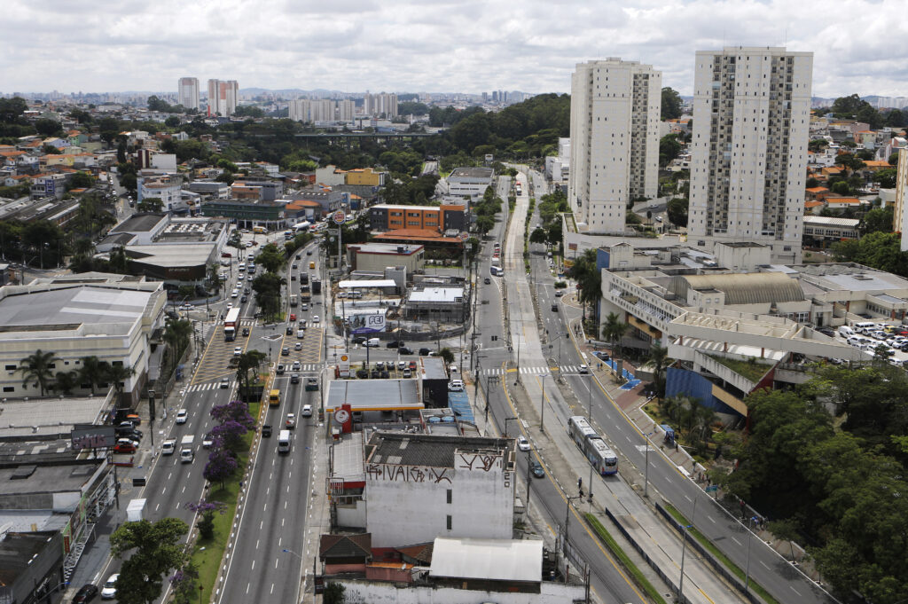

Historia de como tudo começou

Como Surgiu?
O ABC Paulista surgiu no século XIX, com o desenvolvimento da indústria têxtil na região. As cidades de Santo André,
São Bernardo do Campo e São Caetano do Sul, que originalmente eram um único município, passaram a se desenvolver
rapidamente, atraindo imigrantes de diversas partes do mundo.
No início do século XX, a região começou a se industrializar, com a instalação de fábricas de automóveis, de eletrodomésticos
e de outros produtos. O desenvolvimento industrial da região foi impulsionado pela proximidade com a capital paulista,
o porto de Santos e a ferrovia Santos-Jundiaí.
A região do ABC Paulista se tornou um importante polo industrial do Brasil, com um PIB per capita superior à média nacional.
A região também é um importante centro comercial e de serviços, abrigando grandes empresas e instituições financeiras.
A sigla ABC vem das iniciais dos nomes dos três municípios que formam a região: Santo André, São Bernardo do Campo e
São Caetano do Sul. Às vezes, a sigla é ampliada para ABCDDMRR, incluindo também as cidades de Mauá, Ribeirão Pires e Rio Grande da Serra.
Aqui estão alguns marcos importantes na história do ABC Paulista:
1562: Fundação da vila de Santo André da Borda do Campo.
1857: Inauguração da ferrovia Santos-Jundiaí.
1910: Instalação da primeira fábrica de automóveis na região.
1930: Início do processo de industrialização da região.
1950: A região do ABC Paulista se torna um importante polo industrial do Brasil.
Atualmente, o ABC Paulista é uma região dinâmica e diversificada, que oferece uma ampla gama de oportunidades para seus habitantes.
A região é um importante centro econômico, cultural e social do Brasil.
São Bernardo do Campo
São Bernardo do Campo é a segunda cidade mais populosa do estado de São Paulo, com mais de 800 mil habitantes. É um importante polo industrial, com empresas como a Volkswagen, a Mercedes-Benz e a Nestlé.
A cidade também abriga o Parque Zoológico de São Bernardo do Campo, um dos maiores zoológicos do Brasil.

Santo André
Santo André é uma cidade do estado de São Paulo, Brasil. É a terceira cidade mais populosa do ABC Paulista, com cerca de 720 mil habitantes.
A cidade é um importante centro industrial, com empresas como a General Motors, a Nestlé e a Samsung.
Santo André também é um importante centro cultural, com museus, teatros e cinemas.

São Caetano do Sul
São Caetano do Sul é uma cidade do estado de São Paulo, Brasil. É a quarta cidade mais populosa do ABC Paulista, com cerca de 150 mil habitantes.
A cidade é um importante centro industrial, com empresas como a Siemens, a Pirelli e a Samsung.
São Caetano do Sul também é um importante centro educacional, com universidades e faculdades.

Diadema
Diadema é uma cidade da Grande São Paulo, com mais de 400 mil habitantes. É um importante centro comercial e de serviços, com um comércio diversificado e uma rede de hospitais e clínicas.
A cidade também abriga o Parque Ecológico do Jaraguá, uma área de preservação ambiental com trilhas para caminhadas e ciclismo.
